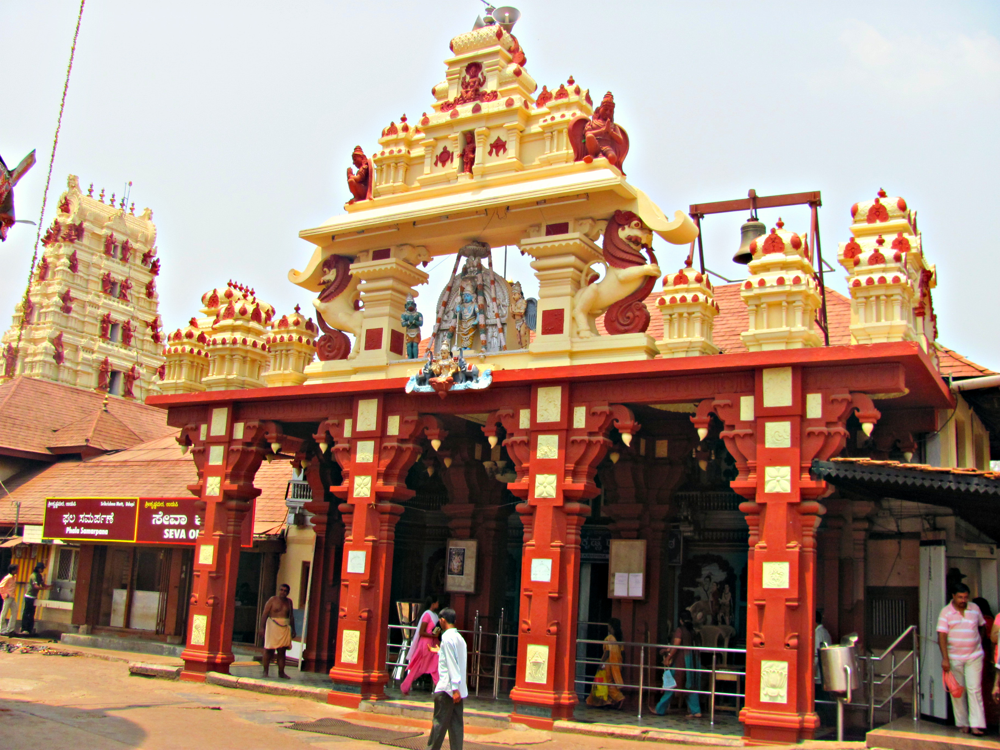
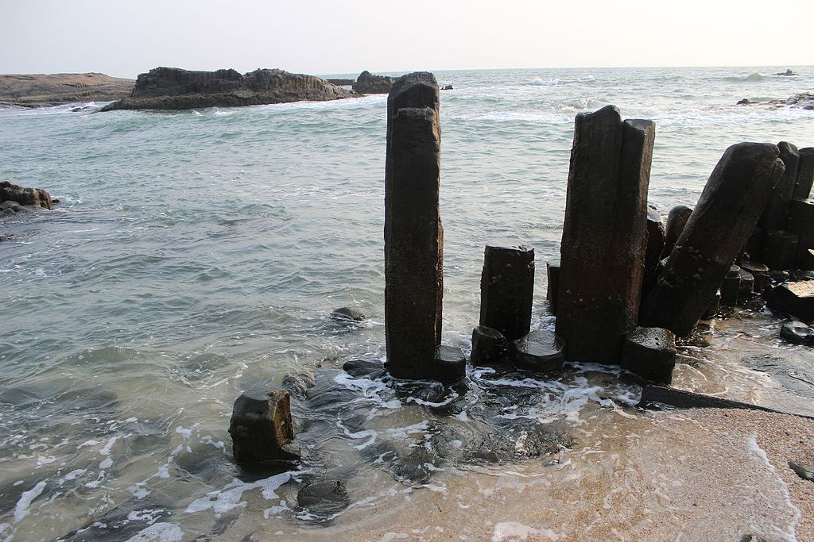
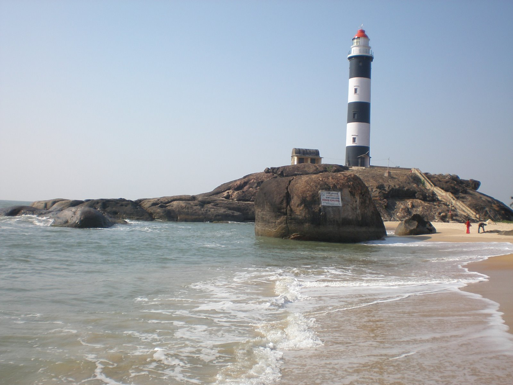
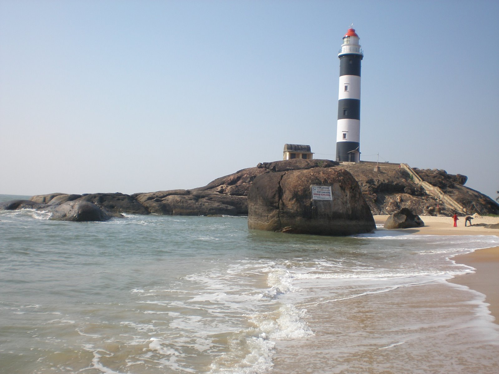
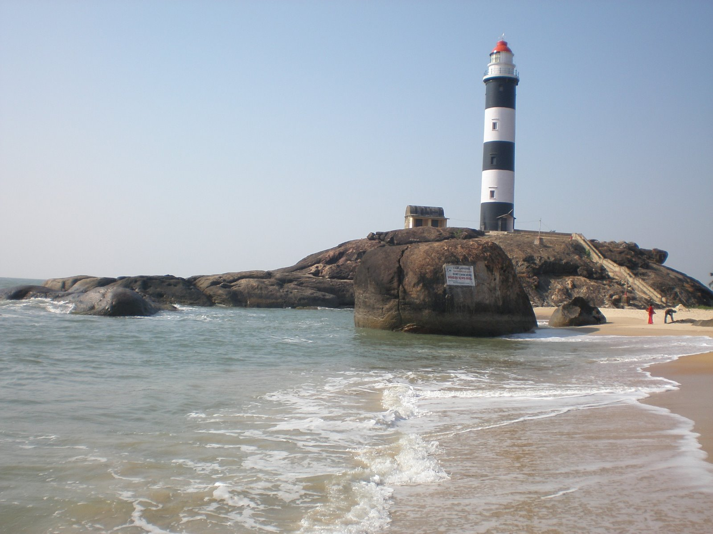

Places to visit
Udupi is a quaint little coastal town in Karnataka that lures travelers from far and wide with its pristine beaches that are fringed by coconut trees, whimsical waterfalls amidst dense jungles, adventurous trekking trails that run through the bountiful ranges of the Western Ghats, and reverential temples. Being a place that is abundantly blessed by Mother Nature, the things to do in Udupi are endless.
Learn more


 

